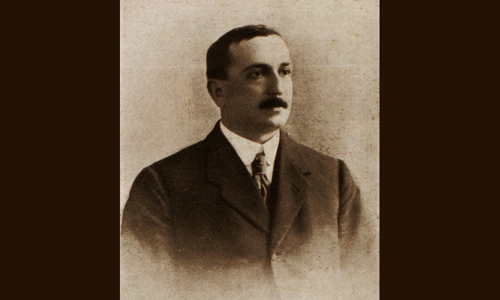

Villa

- Dati biografici
- Albero familiare
- Luoghi
- Eventi
- Bibliografia
- Opere trattate
Edoardo Villa (? - 1925), figlio di Giovanni Battista Villa (1824-1900 ca.) pittore e allievo dell’Accademia Ligustica di Genova nonché importante conoscitore e collezionista, fu una figura di rilievo nel panorama antiquario genovese.
Fu proprietario di una galleria di arte moderna, la “Galleria Permanente d’Arte Antica e Moderna A. Vitelli”, che ancora nel 1936 aveva sede in via XX Settembre 44, presso Palazzo Bagnara.
La galleria Vitelli nel corso degli anni Venti fu una realtà molto attiva nella promozione degli artisti contemporanei, organizzando anche diverse vendite all’asta di importanti collezioni genovesi.
Gli affari però non decollarono e nel 1923 Villa fu costretto a mettere all’asta la propria collezione personale. La vendita fu organizzata dalla Galleria Vitelli e si tenne presso le sale di Palazzo Granello in piazza Giustiniani 7.
Alla sua morte, avvenuta nel gennaio del 1925, Demetrio Tolosani, sulle pagine della rivista «L’Antiquario», scrisse una breve commemorazione del collega genovese, ricordando come Villa fosse un mercante serio e rispettabile, seppur negli ultimi anni si trovasse in ristrettezze economiche.
Eventi signficativi nell'attività antiquariale:
- 1923 - Vendita all'asta - Collezione E. Villa: Per volere dello stesso Edoardo Villa, a causa di problemi economici, venne organizzata la vendita della sua collezione, che si tenne presso la Galleria Vitelli di Genova, nelle sale di Palazzo Granello, nel 1923.
Bibliografia essenziale:
- Commemorazione di Edoardo Villa, In «L'Antiquario», XII, 1, 1925, p. 45
- Catalogo della collezione d'arte antica di proprietà Edoardo Villa & C., catalogo della vendita all'asta Vitelli (Genova, 15-22 dicembre 1923), Genova 1932
- Olcese Spingardi, C. (2020), Villa, Giovanni Battista, In Dizionario Biografico degli Italiani, 99
- Romanengo, M. (2001), Il mondo del collezionismo privato a Genova nel Novecento, In Orlando, pp. 110-120
Vedi le opere transitate presso l'antiquario presenti nel catalogo della Fondazione Zeri